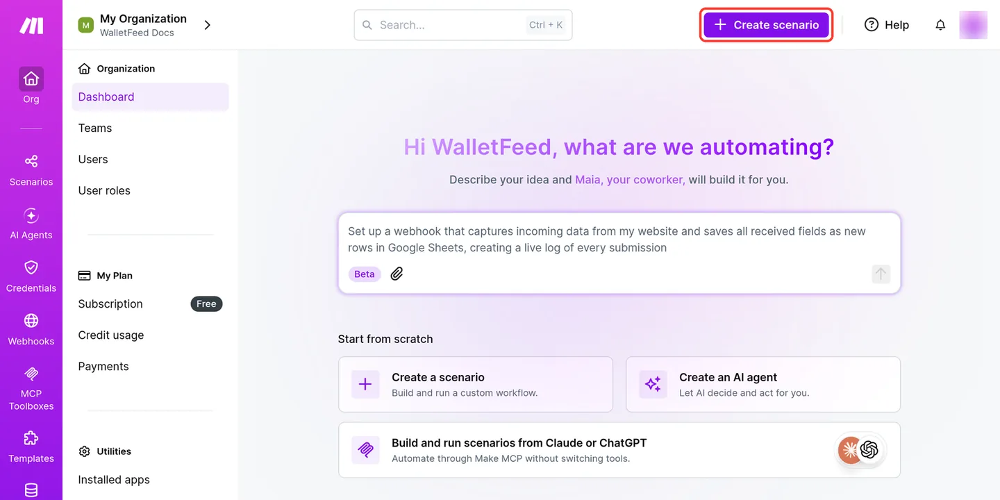
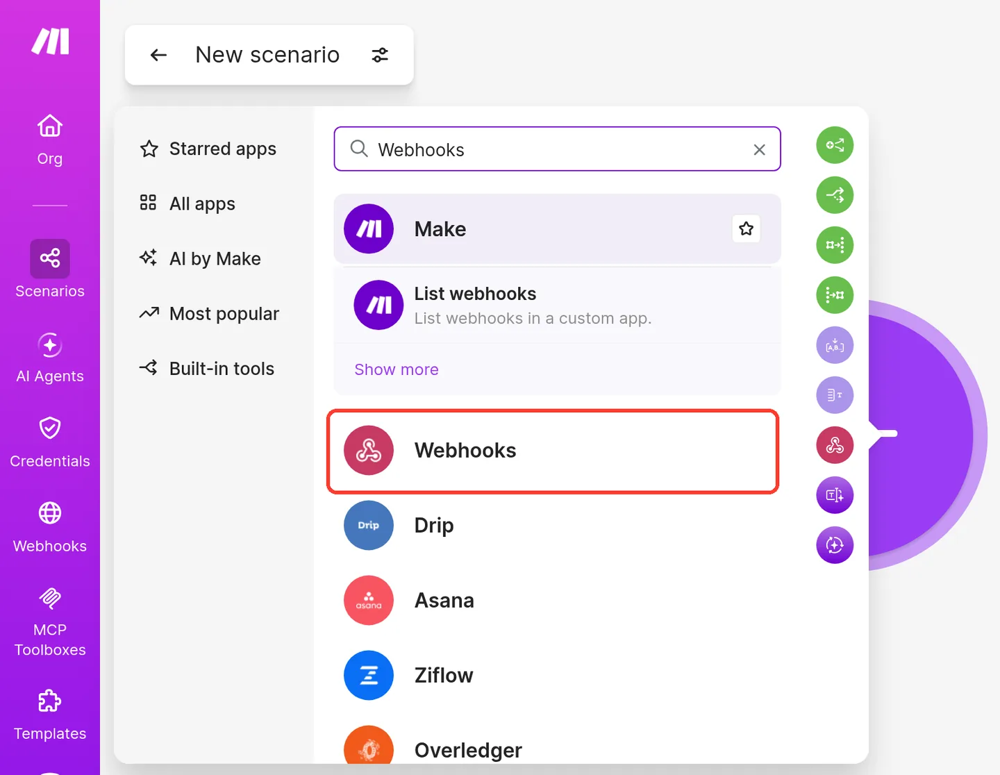
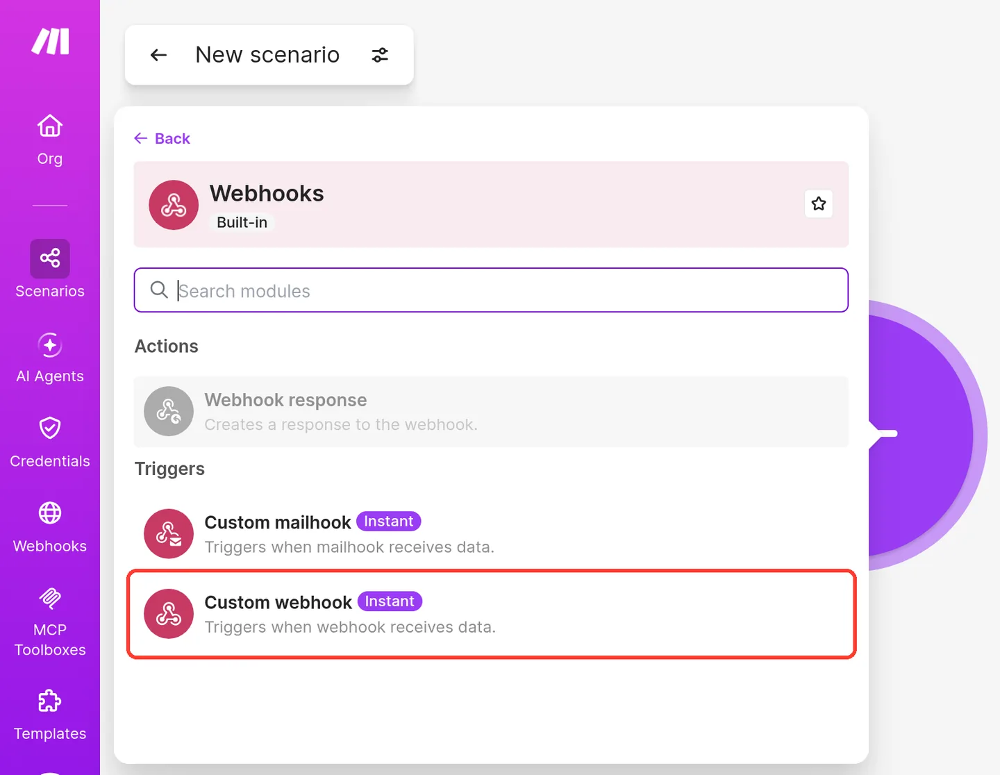
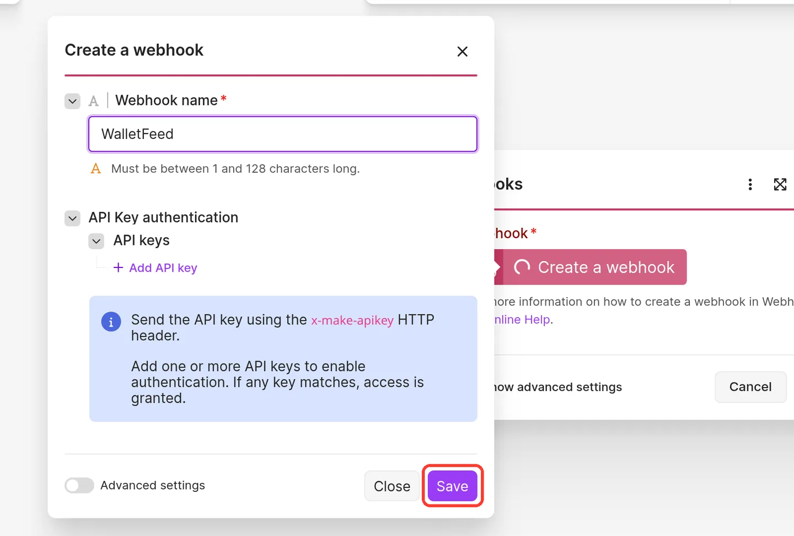
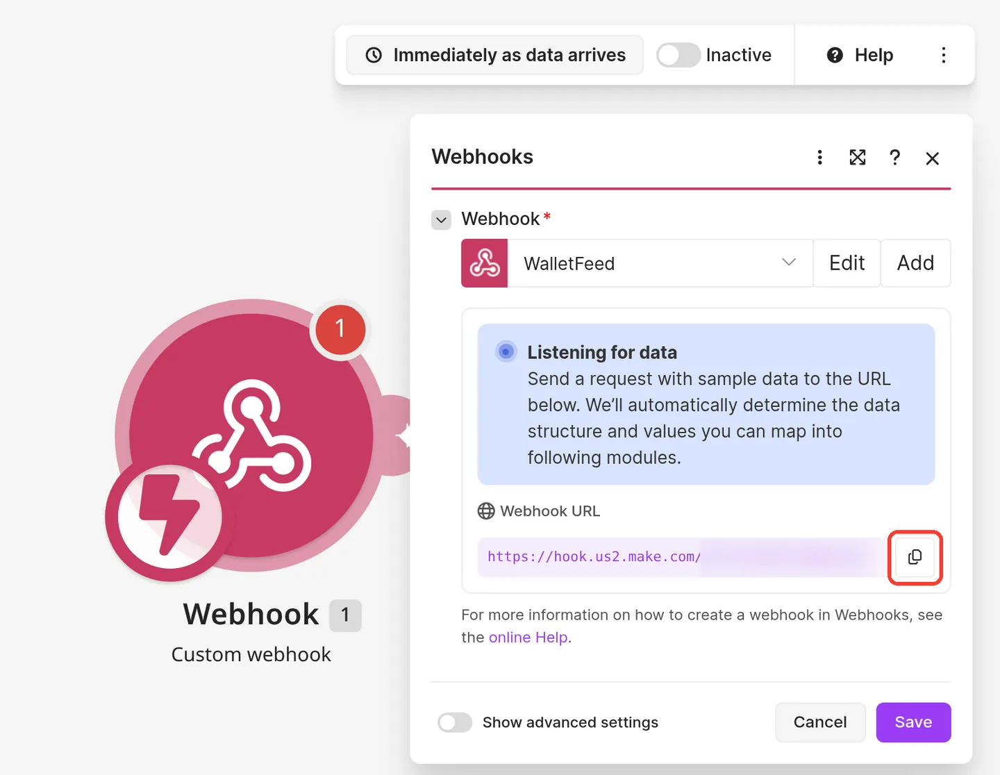
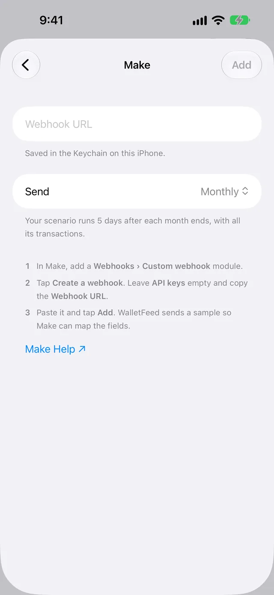
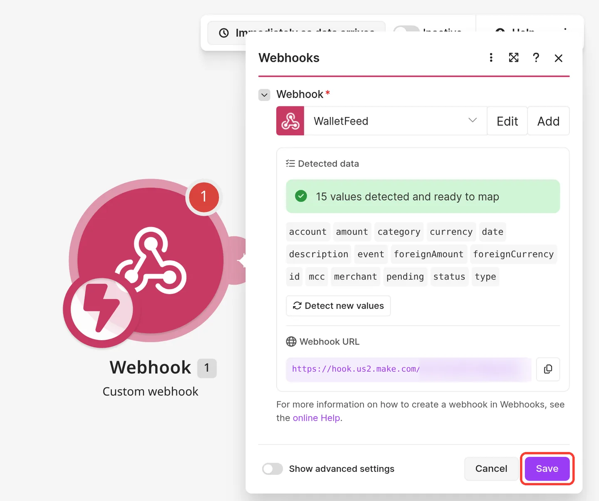
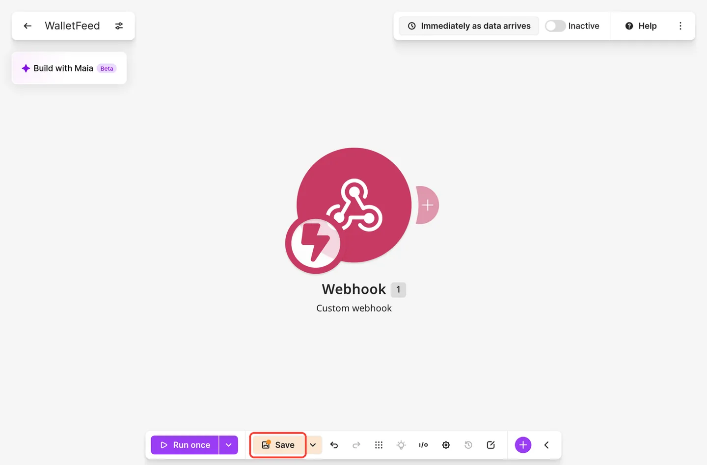
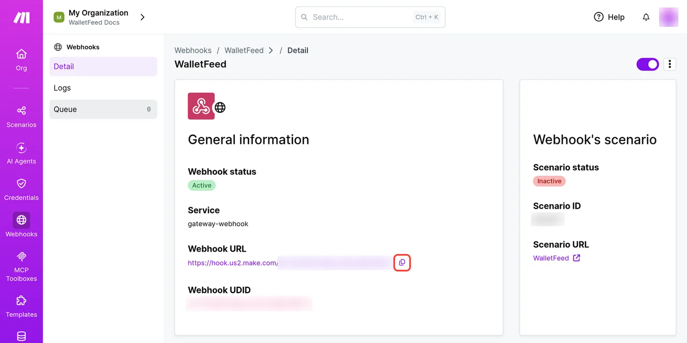

Send Apple Card transactions to Make
WalletFeed sends your Apple Card, Apple Cash and Savings transactions from your iPhone to a scenario in Make (the previous name of Make is Integromat). You add a Custom webhook in Make, then paste its URL in WalletFeed.
Download WalletFeed on the App Store
Before you start
You must have these items:
- An iPhone with iOS 26 or a newer version. WalletFeed is available only in the US.
- WalletFeed Pro, a subscription with a 1-week free trial, or a one-time Lifetime purchase.
- A Make account. You can get an account on Make's sign-up page. The Free plan has the Webhooks app.
- A computer with a web browser for the steps in Make. The screenshots show Make on a computer.
Your URL stays on your iPhone
- WalletFeed keeps the webhook URL in the Keychain on your iPhone. iOS encrypts the Keychain.
- The webhook URL does not go to iCloud Keychain or to your other devices.
- WalletFeed has no account, and no WalletFeed server keeps the webhook URL. No person at WalletFeed can see or get the webhook URL.
- Your iPhone sends the webhook URL only to Make, in each request to Make.
- When you delete the destination, WalletFeed deletes the webhook URL from your iPhone.
Monthly or Each Transaction
In WalletFeed, a Make destination has two values for Send:
| Send | Make receives |
|---|---|
| Monthly | One request for each month, with all the transactions of that month. The scenario starts one time for each month. |
| Each Transaction | One request for each new transaction and for each change to a transaction. The scenario starts one time for each request. |
When you add a Make destination, Send is Monthly until you change it. A Make destination from WalletFeed 1.0 keeps Each Transaction. You can change Send after you add the destination (refer to Change or remove the destination).
With Monthly, WalletFeed sends each month 5 days after the month ends. It sends the month the first time that it sends data on or after the 6th day of the next month, in your time zone. Thus, most charges from the end of the month have posted.
Step 1: Add a Custom webhook in Make
The webhook gives you a URL. WalletFeed sends your transactions to this URL.
-
On your computer, get access to your Make account.
-
Click + Create scenario.

-
If Make shows a Scheduling message, click Got it.
-
If Make shows the Maia panel, click X on the panel.
Maia is not necessary for these steps.
-
In the scenario editor, click the large +.
-
In Search all apps or modules, type
Webhooks. -
Click the Webhooks app with the red icon.
Make shows the app Make first. Below it, Make shows its webhook modules, for example List webhooks. The app Make is not correct for these steps.

-
In Triggers, click Custom webhook.
Custom mailhook is above Custom webhook. Custom mailhook is not correct for these steps.

-
Below Webhook, click Create a webhook.
-
In Webhook name, replace the name with
WalletFeed. -
Do not click + Add API key.
If the webhook has an API key, Make accepts only the requests that contain the key. WalletFeed cannot send an API key.
-
Click Save.

-
Below Webhook URL, click the copy button at the end of the URL.
Make does not show the full URL. If you select the text, you copy only a part of the URL.

-
Keep the scenario open.
When you tap Add in WalletFeed, Make must show Listening for data.
Step 2: Add Make in WalletFeed
On Make's Free plan, while the scenario is not active, the queue of the webhook can contain a maximum of 50 requests. With Send set to Each Transaction, a new Make destination receives a maximum of 30 days of previous transactions, and each transaction is one request. These can be more than 50. With Monthly, each month is one request.
If you use Each Transaction on Make's Free plan, you can set Initial History to Today before you add Make. Then Make receives no previous transactions. To set Initial History, do these steps:
-
On your iPhone, open WalletFeed.
-
Tap Settings (the gear button) at the top of the screen.
-
In the Sync section, set Initial History to Today.
Settings shows the Sync section only with WalletFeed Pro.
-
Tap Done.
To add Make, do these steps:
-
On your iPhone, open WalletFeed.
-
Tap Destinations.
-
Tap + at the top of the screen.

-
In Automations, tap Make.
You can also type
Makein the search field. -
If WalletFeed shows the WalletFeed Pro screen, get WalletFeed Pro on that screen. WalletFeed then opens the Make screen.
-
Paste the URL in the Webhook URL field.
The URL stays in the Keychain on your iPhone.

-
In Send, select Monthly or Each Transaction.
With Monthly, WalletFeed shows “Your scenario runs 5 days after each month ends, with all its transactions.” With Each Transaction, WalletFeed shows “Each transaction runs your scenario. Add a filter later to send fewer.”
-
Tap Add. WalletFeed sends a sample to Make.
With Each Transaction, the sample is one transaction, with
merchantWalletFeed andamount-4.2. With Monthly, the sample is one month:eventismonth,countis 1, andtransactionscontains the sample transaction. -
Read the message Send Transactions to Make?
The message tells you the data that Make receives, the Wallet accounts of the transactions and the start date. With Monthly, the message starts with “Make receives one event 5 days after each month ends”.
-
Tap Send. If you tap Cancel, WalletFeed does not add the destination.
Destinations then shows the new destination with the name Make. WalletFeed sends the transactions from the start date to Make. Until the scenario is active, Make keeps these transactions in the queue of the webhook.
Step 3: Save the scenario in Make
-
On your computer, make sure that Make shows Detected data with the fields of the sample.
With Each Transaction, Make shows “18 values detected and ready to map”.

-
Click Save in the webhook panel.
-
To change the scenario name, replace the name with
WalletFeedat the top of the editor. -
Click Save in the toolbar at the bottom of the editor.
If a webhook is not in a scenario for more than 5 days, Make deactivates the webhook. Then WalletFeed cannot send transactions to it.

Step 4: Add modules and activate the scenario
-
In the scenario, add more modules after the webhook.
These modules can use each field of a transaction, for example
amountormerchant.With Monthly, add Flow Control › Iterator after the webhook first. In the Array field of the Iterator, select
transactions. Then each module after the Iterator gets one transaction. The Iterator uses 1 credit, and each module after it uses 1 credit for each transaction. -
Click Save in the toolbar at the bottom of the editor.
-
To start the scenario one time, click Run once.
If the queue of the webhook is empty, Make shows Waiting for data... until Make receives a request.
-
If Make shows Use existing data, click Use existing data.
Make starts the scenario one time with data from the queue.
-
After the scenario starts, look at the fields in Output.
-
To activate the scenario, click the Inactive switch at the top of the editor.
With Immediately as data arrives, the scenario starts each time that Make receives a request.
-
If Make shows a message about the data in the queue, click the button that processes the data.
Then the scenario gets the transactions in the queue. If you delete the data, the scenario does not get these transactions.
Data that Make receives
Your transactions go from your iPhone directly to Make. WalletFeed has no account, and no WalletFeed server keeps your transactions or keys. After Make receives your transactions, the terms of Make are applicable to them.
With Monthly, WalletFeed sends one HTTP request for each month. The request has these fields:
| Field in Make | Value |
|---|---|
event |
month |
month |
The month in your time zone, for example 2026-10 |
count |
The number of transactions in transactions |
total |
The sum of the amounts. Purchases are negative. If the month has more than one currency, total has no value. |
currency |
The currency code of total, for example USD. If the month has more than one currency, currency has no value. |
transactions |
The transactions of the month, newest first. Each transaction has the fields in the subsequent table, but no event. |
If the filter of the destination includes no transactions of a month, Make receives no request for that month.
With Each Transaction, WalletFeed sends one HTTP request for each new or changed transaction, and a maximum of 5 requests each second. If a field has no value, Make shows the field as empty. The request has these 18 fields:
| Field in Make | Value from Wallet |
|---|---|
event |
created the first time that WalletFeed finds the transaction in Wallet and for each transaction from Initial History or Send History, and updated after a change |
id |
The transaction ID from Wallet. The ID stays the same when the transaction changes. |
date |
The day of the purchase in your time zone, for example 2026-10-30 |
merchant |
The merchant name, or the description if Wallet has no merchant name |
amount |
A negative number for a purchase, for example -6.75, and a positive number for a refund or a payment |
currency |
The currency code, for example USD |
category |
The WalletFeed category, for example Dining |
status |
The Wallet status, for example pending, or booked after the charge posts |
pending |
true when status is pending, authorized or memo, and false after the charge posts |
account |
The Wallet account, for example Apple Card |
description |
The description from Wallet |
type |
The type of transaction, for example pointOfSale or refund |
mcc |
The merchant category code, for example 5814 |
foreignAmount |
For a purchase in a different currency, the value in the currency of the merchant |
foreignCurrency |
The currency code of foreignAmount |
postedDate |
The day the charge posted, for example 2026-10-30. It is empty while the charge is pending. |
statementText |
The text of the transaction on the card statement |
exchangeRate |
The exchange rate from Wallet, for a purchase in a different currency. It is empty for a purchase in dollars. |
foreignAmount is also a negative number for a purchase and a positive number for a refund. If the bank does not accept a pending charge or Wallet removes a transaction, Make receives a request with only two fields. These fields are id, and event with the value deleted.
A scenario that you made before WalletFeed 1.2 keeps working. To use postedDate, statementText and exchangeRate in the modules, do these steps:
- On your computer, in the Custom webhook module of the scenario, click Detect new values.
- On your iPhone, tap Send Test.
- On your computer, click Save in the webhook panel.
New and changed transactions
With Each Transaction, while WalletFeed is open, Make receives changes in seconds. When WalletFeed is not open, iOS starts WalletFeed approximately 1 hour or less after a change in Wallet. If Background Sync is on in Settings › Sync, WalletFeed then sends the change. Background Sync is on until you set it to off. After your iPhone starts again, WalletFeed does not send transactions until you type your iPhone passcode one time.
With Monthly, Make receives each month one time, 5 days after the month ends. A charge that is pending at that time has pending true, and Make does not receive it again when it posts. Make also does not receive a change to a month after it received the month, for example a refund with a date in that month. If WalletFeed stops while it sends a month, Make can receive the same month two times. A scenario can use month to find a month that it received before.
With Each Transaction, Make receives a pending charge again when the charge posts. Then event is updated and status is booked, with the same id. For a refund, amount is a positive number and type is refund.
Each request starts the scenario one time. Thus, with Each Transaction, an update also uses credits.
With Each Transaction, if WalletFeed stops while it sends changes, WalletFeed can send the same changes again. A scenario that adds rows must first try to find a row with the same id. If the scenario finds that row, it must change the row.
Send previous transactions
A new Make destination also receives previous transactions from the start date in Settings › Sync › Initial History. Initial History is All until you change it.
With Monthly, a new destination receives all the months from the start date. WalletFeed starts at the first day of the month of the start date. Each previous month is one request, and WalletFeed waits 2 seconds between two months. WalletFeed sends the month in which you add the destination, and each subsequent month, 5 days after the month ends. If you add the destination in the first 5 days of a month, WalletFeed also sends the previous month in this way.
With Each Transaction, Make receives a maximum of 30 days of previous transactions.
To send transactions from a longer period, use Send History:
-
On your computer, make sure that the scenario is active in Make.
-
On your iPhone, open WalletFeed.
-
In Destinations, tap the Make destination.
-
Tap Send History.
-
Tap a period: 30 Days, 90 Days, 1 Year or All.
With Monthly, the period starts on the first day of its month.
-
In the message Send History to Make?, tap Send.
With Monthly, the message shows “Each month runs your scenario once.” With Each Transaction, the message shows “Each transaction runs your scenario.”
WalletFeed sends the newest transactions first. While WalletFeed sends the transactions, the destination screen shows Sending History and a count, for example 20 of 50. With Monthly, Send History does not send again the months that WalletFeed sent 5 days after they ended.
Send History uses the filter of the Make destination. With Monthly, each month uses credits in Make. With Each Transaction, each transaction uses credits in Make. The Free plan has 1,000 credits each month.
To stop Send History, do these steps:
- Tap Send History.
- Tap Stop Sending.
The transactions that Make received stay in Make.
Change or remove the destination
To change Send, do these steps:
- On your iPhone, in Destinations, tap the Make destination.
- In Send, select Monthly or Each Transaction.
- Optional: If you selected Each Transaction and the destination has no filter, tap Turn On Filter below Send.
- On your computer, in the Custom webhook module of the scenario, click Detect new values.
- On your iPhone, tap Send Test.
- On your computer, make sure that Make shows the fields of the sample.
- Click Save in the webhook panel.
- In the modules after the webhook, select the fields again.
After you change Send to Monthly, Make receives the month in which you change Send 5 days after it ends. This month has all its transactions, also the transactions that Make received before. After you change Send to Each Transaction, Make receives the changes from that time. To send previous transactions, use Send History.
To change the transactions that go to Make, change the filter of the Make destination. To stop the destination for a period, set the Enabled switch to off.
In Webhook, the destination screen shows only the first part of the URL, for example hook.us2.make.com.
To find the URL of the webhook again, do these steps:
-
On your computer, in the Make sidebar, click Webhooks.
-
Click WalletFeed.
-
Below Webhook URL, click the copy button.

To replace the URL, for example after you add a new webhook, do these steps:
-
On your iPhone, open WalletFeed.
-
In Destinations, tap the Make destination.
-
Tap Replace URL.
-
Paste the URL in the Webhook URL field.
-
Tap Replace.
Before WalletFeed keeps the new URL, it sends a sample. If Make does not accept the sample, WalletFeed does not replace the URL.
To remove the destination, do these steps:
- In Destinations, tap the Make destination.
- Tap Delete.
- In the message Delete Make?, tap Delete.
The transactions that WalletFeed sent stay in Make.
To also remove the webhook, do these steps on your computer:
- In the Make sidebar, click Webhooks.
- Click ⋮ for the WalletFeed webhook.
- Click Delete.
- In Please confirm, click Delete.
- In Confirmation required, click OK.
Make also removes the transactions in the queue of the webhook. The scenario stops.
If there is a problem
If you cannot tap Add
The text in the Webhook URL field is not a Make webhook URL. A Make webhook URL starts with https://hook., for example https://hook.us2.make.com/.
- On your computer, copy the URL again with the copy button in Make.
- On your iPhone, paste the full URL in the Webhook URL field.
If WalletFeed shows “The webhook refused the test (HTTP …)”
Make did not accept the sample, for example because the webhook has an API key, or because Make removed or deactivated the webhook.
- In Make, add a new Custom webhook without an API key (refer to Step 1).
- Copy the URL of the new webhook with the copy button.
- In WalletFeed, paste the URL in the Webhook URL field.
- Tap Add.
If WalletFeed shows “Too many requests. Try again in a few minutes.”
Make accepts a maximum of 300 requests in 10 seconds.
- After some minutes, tap Add again.
If Make does not show the fields
Make did not show Listening for data when WalletFeed sent the sample.
- On your computer, in the webhook panel, click Detect new values.
- On your iPhone, open WalletFeed.
- In Destinations, tap the Make destination.
- Tap Send Test.
- On your computer, make sure that Make shows the fields of the sample.
- Click Save in the webhook panel.
If WalletFeed shows “Make's webhook queue is full. Turn on the scenario, then try again.”
When you tapped Add or Replace, the queue of the webhook was full. Make did not accept the sample.
- On your computer, open the scenario in Make.
- To activate the scenario, click the Inactive switch.
- If Make shows a message about the data in the queue, click the button that processes the data.
- On your iPhone, tap Add or Replace again.
If WalletFeed shows “Rejected (HTTP 400)”
The queue of the webhook is full, and Make does not accept more requests. While the scenario is not active, Make keeps the requests in the queue. On the Free plan, the queue can contain a maximum of 50 requests. The Webhooks page in Make shows the number of requests in the queue, for example 50/50.
- On your computer, open the scenario in Make.
- To activate the scenario, click the Inactive switch.
- If Make shows a message about the data in the queue, click the button that processes the data.
- On your iPhone, open Settings › Sync in WalletFeed.
- Tap Sync Now.
- Tap Done.
- In Destinations, tap the Make destination.
- If the destination screen shows Try Again below Sending History, tap Try Again.
If WalletFeed shows “Rejected (HTTP 410)”
Make removed or deactivated the webhook. If a webhook is not in a scenario for more than 5 days, Make deactivates it.
- On your computer, add a new Custom webhook in Make (refer to Step 1).
- Save the scenario (refer to Step 3).
- On your iPhone, open WalletFeed.
- In Destinations, tap the Make destination.
- Tap Replace URL.
- Paste the new URL in the Webhook URL field.
- Tap Replace.
If the scenario does not start for new transactions
The scenario is not active. Make keeps the transactions in the queue of the webhook.
- On your computer, open the scenario in Make.
- To activate the scenario, click the Inactive switch.
- If Make shows a message about the data in the queue, click the button that processes the data.
If Make receives transactions only while WalletFeed is open
Background Sync is off, or your iPhone started again and you did not type its passcode.
- In WalletFeed, open Settings › Sync.
- Set Background Sync to on.
- After your iPhone starts again, type its passcode one time.
 Scan with your iPhone
Scan with your iPhone
Related
Updated November 16, 2026